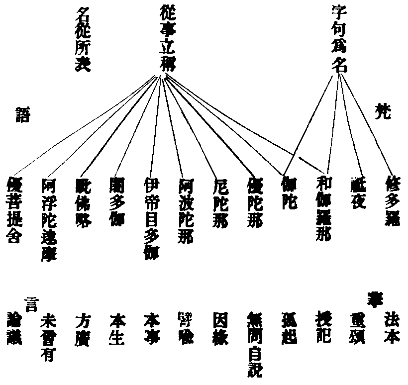

對越
淨土資糧全集卷之五
淨土日課章
六時對越篇(事冗者二時三時亦得)
南無蓮池海會佛菩薩(二稱三拜)
佛說阿彌陀經
如是我聞。一時佛在舍衛國。祗樹給孤獨園。與大比丘僧。千二百五十人俱。皆是大阿羅漢。眾所知識。長老舍利弗。摩訶目犍連。摩訶迦葉。摩訶迦旃延。摩訶俱絺羅。離婆多。周利槃陀伽。難陀。阿難陀。羅睺羅。憍梵波提。賓頭羅頗羅墮。迦留陀夷。摩訶劫賓那。薄拘羅。阿[少/兔]樓馱。如是等諸大弟子。并諸菩薩摩訶薩文殊師利法王子。阿逸多菩薩。乾陀訶提菩薩。常精進菩薩。與如是等諸大菩薩。及釋提桓因等。無量諸天大眾俱。
爾時佛告長老舍利弗。從是西方過十萬億佛土。有世界名曰極樂。其土有佛。號阿彌陀。今現在說法。舍利弗。彼土何故名為極樂。其國眾生。無有眾苦。但受諸樂。故名極樂。
又舍利弗。極樂國土。七重欄楯。七重羅網。七重行樹。皆是四寶周匝圍繞。是故彼國名為極樂。
又舍利弗。極樂國土。有七寶池。八功德水充滿其中。池底純以金沙布地。四邊階道。金銀琉璃。玻瓈合成。上有樓閣。亦以金銀瑠璃玻瓈硨磲赤珠瑪瑙而嚴飾之。池中蓮花。大如車輪。青色青光。黃色黃光。赤色赤光。白色白光。微妙香潔。舍利弗。極樂國土。成就如是功德莊嚴。
又舍利弗。彼佛國土。常作天樂。黃金為地。晝夜六時。雨天曼陀羅華。其土眾生。常以青旦。各以衣械盛眾妙華。供養他方十萬億佛。即以食時還到本國。飯食經行。舍利弗。極樂國土。成就如是功德莊嚴。
復次舍利弗。彼國常有種種奇妙襍色之鳥。白鶴。孔雀。鸚鵡。舍利。迦陵頻伽共命之鳥。是諸眾鳥。晝夜六時出和雅音。其音演暢五根五力。七菩提分。八聖道分。如是等法。其土眾生。聞是音已。皆悉念佛念法念僧。舍利弗。汝勿謂此鳥。實是罪報所生。所以者何。彼佛國土。無三惡道。舍利弗。其佛國土。尚無惡道之名。何況有實。是諸眾鳥。皆是阿彌陀佛欲令法音宣流。變化所作。舍利弗。彼佛國土。微風吹動諸寶行樹。及寶羅網。出微妙音。譬如百千種樂。同時俱作。聞是音者。自然皆生念佛念法念僧之心。舍利弗。其佛國土。成就如是功德莊嚴。
舍利弗。於汝意云何。彼佛何故號阿彌陀。舍利弗。彼佛光明無量。照十方國無所障礙。是故號為阿彌陀。
又舍利弗。彼佛壽命。及其人民。無量無邊。阿僧祇劫。故名阿彌陀。舍利弗。阿彌陀佛成佛已來。於今十劫。
又舍利弗。彼佛有無量無邊聲聞弟子。皆阿羅漢。非是算數之所能知。諸菩薩眾亦復如是。舍利弗。彼佛國土。成就如是功德莊嚴。
又舍利弗。極樂國土。眾生生者。皆是阿鞞跋致。其中多有一生補處。其數甚多。非是算數所能知之。但可以無量無邊阿僧祇說。
舍利弗。眾生聞者。應當發願。願生彼國。所以者何。得與如是諸上善人俱會一處。舍利弗。不可以少善根福德因緣。得生彼國。舍利弗。若有善男子。善女人。聞說阿彌陀佛。執持名號。若一日。若二日。若三日。若四日。若五日。若六日。若七日。一心不亂。其人臨命終時。阿彌陀佛與諸聖眾現在其前。是人終時。心不顛倒。即得往生阿彌陀佛極樂國土。舍利弗。我見是利。故說此言。若有眾生聞是說者。應當發願生彼國土。
舍利弗。如我今者。讚歎阿彌陀佛不可思議功德之利。東方亦有阿閦鞞佛。須彌相佛。大須彌佛。須彌光佛。妙音佛。如是等恒河沙數諸佛。各於其國出廣長舌相。徧覆三千大千世界。說誠實言。汝等眾生。當信是稱讚不可思議功德。一切諸佛所護念經。
舍利弗。南方世界。有日月燈佛。名聞光佛。大燄肩佛。須彌燈佛。無量精進佛。如是等恒河沙數諸佛。各於其國出廣長舌相。徧覆(三千大千)世界。說誠實言。汝等眾生。當信是稱讚不可思議功德。一切諸佛所護念經。
舍利弗。西方世界。有無量壽佛。無量相佛。無量幢佛。大光佛。大明佛。寶相佛。淨光佛。如是等恒河沙數諸佛。各於其國出廣長舌相。徧覆三千大千世界。說誠實言。汝等眾生。當信是稱讚不可思議功德。一切諸佛所護念經。
舍利弗。北方世界。有燄肩佛。最勝音佛。難沮佛。日生佛。網明佛。如是等恒河沙數諸佛。各於其國出廣長舌相。徧覆三千大千世界。說誠實言。汝等眾生。當信是稱讚不可思議功德。一切諸佛所護念經。
舍利弗。下方世界。有師子佛。名聞佛。名光佛。達磨佛法幢佛。持法佛。如是等恒河沙數諸佛。各於其國出廣長舌相。徧覆三千大千世界。說誠實言。汝等眾生。當信是稱讚不可思議功德。一切諸佛所護念經。
舍利弗。上方世界。有梵音佛。宿王佛。香上佛。香光佛。大燄肩佛。雜色寶華嚴身佛。娑羅樹王佛。寶華德佛。見一切義佛。如須彌山佛。如是等恒河沙數諸佛。各於其國出廣長舌相。徧覆三千大千世界。說誠實言。汝等眾生。當信是稱讚不可思議功德。一切諸佛所護念經。
舍利弗。於汝意云何。何故名為一切諸佛所護念經。舍利弗。若有善男子。善女人。聞是經受持者。及聞諸佛名者。是諸善男子。善女人。皆為一切諸佛之所護念。皆得不退轉於阿耨多羅三藐三菩提。是故舍利弗。汝等皆當信受我語。及諸佛所說。
舍利弗。若有人已發願。今發願。當發願。欲生阿彌陀佛國者。是諸人等。皆得不退轉於阿耨多羅三藐三菩提。於彼國土。若已生。若今生。若當生。是故舍利弗。諸善男子。善女人。若有信者。應當發願生彼國土。
舍利弗。如我今者稱讚諸佛不可思議功德。彼諸佛等。亦稱讚我不可思議功德。而作是言。釋迦牟尼佛。能為甚難希有之事。能於娑婆國土五濁惡世。劫濁。見濁。煩惱濁。眾生濁。命濁中。得阿耨多羅三藐三菩提。為諸眾生說是一切世間難信之法。舍利弗。當知我於五濁惡世行此難事。得阿耨多羅三藐三菩提。為一切世間說此難信之法。是為甚難。佛說此經已。舍利弗及諸比丘。一切世間天人阿修羅等。聞佛所說。歡喜信受。作禮而去。
佛說阿彌陀經
考證
佛
佛亦名薄伽梵。具六義。一自在。二熾盛。三端嚴。四名稱。五吉祥。六尊貴。舊婆伽梵。訛也○妙宗鈔云。佛者。一切智異外道。慈悲異二乘。平等異小菩薩。究竟覺異諸因位。四種分別○蓮師疏云。佛者梵語。此云覺者。備三覺故。自覺異凡夫。覺他異二乘。覺滿異菩薩。三覺俱圓。故云覺也。
與大比丘僧
比音鼻。此云乞士。謂上乞法於諸佛。以明己之真性。下乞食於世人。以為世人多種福德。又云含三義。乞士。破惡。怖魔○蓮師鈔云。乞食資身。乞法資心。怖魔者。出家離欲。趨向無生。魔失黨與。生怖畏故。破惡者。能破煩惱。九十八使。悉皆斷絕故○僧者梵語。具云僧伽。此云眾和合。
難陀
此云善歡喜。佛之親弟也。
釋提桓因
疏云。此云能天主。忉利天王也。
極樂
梵語須摩提。此云安樂。亦名安養。亦名清泰。亦名妙意。名雖小殊。皆極樂義。以五濁輕重而分淨穢。娑婆五濁重。故兼四惡趣。輪迴不息。安養五濁輕。惟有人天。皆得不退。故名極樂。四土之中。此是同居土。盡理言之。唯究竟寂光。是真極樂。
四寶
疏云。七寶前四也。
上有樓閣
觀經云。眾寶國土。一一界上。有五百億寶樓。大本云。其講堂精舍宮殿樓觀。皆七寶莊嚴。自然化成者也。又大本云。是諸樓閣。有隨意高大。浮於空中若雲氣者。有不能隨意高大。止在地上者。以求道時。德有厚薄所致。
池中蓮華
青色者。名優鉢羅華。黃色者。名拘勿頭華。赤色者。名波羅摩華。白色者。名芬陀利華。觀經云。一一池中有六十億七寶蓮華。則非止四色。一一蓮華。團圍正等十二由旬。非止如車輪也。大本云。隨機所見。優劣不同耳。
舍利
此云春鶯。亦云鶖鷺。
七菩提分
疏云。即七覺支。一擇法。二精進。三喜。四除。五捨。六定。七念。七念者。修出世道時。善能覺了。常使定慧均平。若心沉沒。當念用擇進喜三支。察而起之。若心浮動。當念用除捨定三支。攝而伏之。念念調和。使中適故。
光明無量
疏云。光明有二。一者智光。二者身光。復有二義。一者常光。二者放光。又光所因復有二義。一是萬德所成。一是本願所致。鈔云。十方諸佛頂中光明。有照一里二里者。如是漸遠。有照二百萬里者。有照一世界。二世界。如是漸遠。有照二百萬世界者。唯阿彌陀佛光明。照十方世界。無有窮盡。故號無量光佛。疏云。大本及觀經題。皆止云無量壽。不言光者。何義。盖以金光金體。不相離故。言壽。則光在其中矣。
一生補處
疏云。補處者。止此一生。次補佛位。即等覺菩薩也。鈔云。止此一生者。此土修行。捨身受身。千生萬生。未有窮已。乃至證三果者。猶尚有生。阿羅漢地。方斷後有。不得成佛。今此唯餘一生。次即補佛。前如護明。後如慈氏。
善根福德
疏云。欲生彼國。須多善多福。今持名。乃善中之善。福中之福。正所謂發菩提心。而為生彼國之大因緣也。問。以持名為多善根福德。此經之外。別有證據否。答。歷歷可證。善根者。如大悲經。大莊嚴經論。華嚴第十四回向。皆以稱名為善根。而今經持名。正回向無上菩提之善根也。以阿彌陀佛。即無上菩提故。是則善中之善。名多善也。證福德者。如大品般若經。稱揚諸佛功德經。增一阿含經。及智論。皆以持名為福德之明證也。亦有二義。一者彌陀乃萬德名號。一名纔舉。萬德齊圓。不期於福。福已俻故。二者以持念力。自然諸惡不作。眾善奉行。以之修福。福易集故。是則福中之福。名多福也。又引寶積十九經。雙顯持名為多善多福之明證。諸經皆以文長不述。當於彌陀經疏鈔考之。
阿閦鞞佛
疏云。此。云不動。法身不動故。
大須彌佛
佛德高大如須彌。超過眾生。
妙音佛
疏云。法音圓妙。說法稱機故。
日月燈佛
日月燈。表佛三智。
名聞光佛
疏云。名稱普聞。如光遠照。
無量精進佛
自利利人。未甞休息。
無量相佛
疏云。相好無盡故。
大光佛
相好殊特。如寶可貴。
淨光佛
淨表法身。光表應化。
燄肩佛
雙照真俗。如肩發燄。
最勝音佛
梵音深妙。超勝一切。
難沮佛
佛德堅密。不可沮壞。
日生佛
如日初生。無幽不照。
網明佛
智明如網。徧覆十界。
師子佛
如師子王。摧伏羣獸。
名聞佛
名稱普聞無量世界。
名光佛
名如日光。徧照一切。
法幢佛
法相如幢。高出羣有。
梵音佛
疏云。佛音清淨。無雜染故。
宿王佛
如月為宿王。眾星所拱。
香上佛
疏云。佛聖中聖。如香中香。最上無比。
大燄肩佛
大照發光。雙照二邊。
寶華德佛
四德如寶。如華開敷。
見一切義佛
洞達諸法甚深義趣。
如須彌山佛
如妙高山。眾聖中尊。
亦稱讚我
彌陀亦同諸佛稱諸釋迦也。
五濁
楞嚴經云。譬如清水。投之沙土。土失流礙。水亡清潔。汩然渾濁。汝濁五重。亦復如是○略解云。人壽二萬歲時。即入劫濁。四濁增劇。聚在此時。瞋恚增劇。刀兵起。貪欲增劇。饑饉起。愚愔增劇。疾疫起。三災起故。煩惱倍隆。諸見轉熾。眾濁交凑。見濁者。身見。邊見。邪見。見取。戒取五利使。乃至六十二見等也。煩惱濁者。貪嗔癡慢疑五鈍使。乃至八百煩惱等是也。眾生濁者。攪五陰見慢果報。立此假名。命濁者。剎那生滅。催年促壽命也○宗鏡錄曰。居此濁亂之時。遮障增劇。境飄識焰。燒盡善根。業動心風。吹殘白法。着瞋魑魅之鬼趣。墮癡羅剎之網中。為貪愛王之拘留。被魔怨王之驅役。孰能頓悟。效此圓修。
(還)謹按此考證。勢難愽採。略舉其要耳。欲悉其義。當於彌陀經疏鈔考之。
拔一切業障根本得生淨土陀羅尼
南無阿彌多婆夜(一)哆他伽哆夜(二)哆地夜他(三)阿彌利都婆毗(四)阿彌利哆(五)悉耽婆毗(六)阿彌利哆(七)毗伽蘭帝(八)阿彌利哆(九)毗伽蘭哆(十)伽彌膩(十一)伽伽那(十二)枳哆伽利(十三)莎婆訶(十四)
考證
哆他伽哆夜
此云如來。
哆地夜多
此云。即說呪曰。以下方是密語○哆字與帶字同音。方得其正。地字讀作逮字○略解云呪。是梵語。中國之人持誦。不經師授。訛謬實多。此呪載養字函。書者節句差誤。後人沿襲。遂失其正。龍舒淨土文。樂邦文類等。不原其所以。執之為是。而反以正為悞。謬之甚矣今依正本。刊印行矣○蓮師亦以略解句讀為是。疏云。諸本句讀稍異。今依古本。經呪相聯。正顯密圓通義。兼持。則雙美畢具。單舉。亦交攝不遺。故曰。圓通。若專持佛名號。尤勝持呪。詳見疏鈔。
讚佛偈
阿彌陀佛真金色 相好端嚴無等倫
白毫宛轉五須彌 紺目澄清四大海
光中化佛無數億 化菩薩眾亦無邊
四十八願度眾生 九品咸令登彼岸
南無西生極樂世界大慈大悲阿彌陀佛
南無阿彌陀佛(五百聲或三百聲)
南無觀世音菩薩(十聲)
南無大勢至菩薩(十聲)
南無清淨大海眾菩薩(十聲)
考證 淨土指歸曰。業報差別經曰。高聲念佛誦經。有十種功德。一能排睡魔。二天魔驚怖。三聲徧十方。四三塗息苦。五外聲不入。六令心不散。七勇猛精進。八諸佛歡喜。九三昧現前。十往生淨土。又大集十藏經云。小念見小佛。大念見大佛。釋云。大念者。大聲念佛也。小念者。小聲念佛也。奉勸世人。勵聲念佛。三昧易成。小聲念佛。遂多馳散。學者方知。非常人能曉也○念佛持珠手法當結佛印見造像經可考。
迴向文(見龍舒淨土文 若欲全備念西方願文見誓願章)
(眾某等)一心歸命極樂世界阿彌陀佛。願以淨光照我。慈誓攝我。我今為脫娑婆苦報。求生淨土。滿菩提願。發至誠心。修行淨業。願以禮念如來聖號。諷經誦呪。眾善功德。投入如來誓願海中。承佛慈力。諸罪消滅。淨因增長。我若臨欲命終。自知時至。身無痛苦。心無貪戀。意不顛倒。如入禪定。佛及聖眾。手持金臺。異香天樂。來迎接我。如一念頃。生極樂國。華開見佛。即聞佛乘。頓開佛慧。即證無生。廣度有情。同歸淨土。惟願如來特垂救濟。十方三世一切佛。一切菩薩摩訶薩。摩訶般若波羅蜜。
考證 淨名經曰。志常安住。方便迴向。僧什曰。萬善無常。隨意所成。故須方便迴向佛道。如瓶沙王被繫在獄。獄孔中遙見佛於山上往來。心大歡喜。應生兜率天。在路中。聞毗沙門天王食香。自以饑餓而死。心甚樂著。我今當往生彼食處。即時於毗沙門樓上化生。小既迴向。大亦宜然。人之迴向淨土者。有不生淨土哉○宗鏡錄曰。經云。佛言有三種迴向。何等為三。謂過去空。當來空。現在空。無有迴向者。亦無迴向法。亦無迴向處。作是迴向時。三處皆清淨。以此清淨功德。與一切眾生。共迴向阿耨多羅三藐三菩提。作是迴向。無有凡夫及凡夫法。乃至亦無有佛。及迴向者。何以故。法性無緣。不生不滅。無所住故。愚按懺悔有理有事。今迴向亦然。龍舒之文。事迴向也。宗鏡之說。理迴向也。二者固不可偏廢。但下學而未能上達者。事迴向尤不可缺矣。
般若
宗鏡錄曰。萬行皆由般若成立。若萬善無般若。空成有滿因。不契無為果。故知般若。是險惡境中之導師。迷闇室中之明炬。生死海中之智檝。煩惱病中之良醫。碎邪山之大風。破魔軍之猛將。照幽塗之赫日。警昏識之迅雷。扶愚盲之金鎞。沃渴愛之甘露。截愛網之慧力。濟貧乏之寶珠。若般若不明。萬行虗設。
南無阿彌陀佛(一稱一拜四十八拜或二十四拜)
南無觀世音菩薩(三稱三拜)
南無大勢至菩薩(三稱三拜)
南無清淨大海眾菩薩(三稱三拜)
自歸依佛。當願眾生。體解大道。發無上心(一拜)
自歸依法。當願眾生。深入藏經。智慧如海(一拜)
自歸依僧。當願眾生。統理大眾。一切無礙(和南聖眾)
晨昏二課畢詣釋迦佛前稱云。
南無娑婆教主大慈大悲釋迦牟尼佛(三稱三拜)。
考證
大慈大悲
初門曰。佛住大慈心中。以大慈善根力故。能實與一切眾生世間樂。及出世間樂。故云慈能與樂。若四無量中慈。唯心念與樂。而眾生實未得樂。故不名大也○佛住大悲心中。以大悲善根力故。能實拔一切眾生世間苦。分段生死苦。及變易生死苦。故云悲能拔苦。前四無量中悲。雖心念救苦。而眾生實未得脫苦。故不名大也。
釋迦牟尼
華嚴註云。此翻能仁寂默。能仁。姓也。寂默。字也。昔有輪王姓甘蔗氏。聽四妃之譖。擯四太子。至雪山。自立城居。以德懷人。父王悔憶。遣使往召。辭過不還。乃三嘆我子釋迦。因此命氏。此說與折疑論不同。未知孰是○本行經云。諸釋種立性憍慢。及見太子。悉皆默然。王曰。宜字牟尼。故名○妙明折疑論曰。漢西數萬里。有國曰迦維羅。王姓釋迦。父名淨飯。太夫人曰摩耶。佛本居兜率天宮。以先佛迦葉般涅槃後。佛補處。名曰護名。實以三祇位滿。萬德果圓。宿念未周。示同生滅。駕日輪香象。托廕王宮。以太夫人摩耶為母。以周昭王甲寅二十四年四月八日。毗蘭園中。右脇而生。即能縱行七步。目顧四方。一手指天。一手指地。曰天上地下。惟吾獨尊。具三十二種大人相。八十種隨形好。年十九。壬辰二月八日。呼車匿鞁朱騌。遊看四門。逢僧了法。不樂王宮。亟欲修心。迨夜之央。淨居天人報曰。太子可出宮。今正是時。於是跨犍陟。僕車匿。天人捧駕。飛空而去。投身雪嶺之上。趺坐盤石。靜思六年。遂成佛果○頌曰。十九逾城六苦行。五歲歷三十城。說法度生五十年。是則共當八十壽○又梵網經云。悉達七歲家出家。三十成道。發隱曰。大藏經譜。文各稍殊。而疏主於斯。又無明釋。七歲三十。義極難辨。然則竟誰從乎。曰十九出家。六年成道。茲為近。吾從眾○佛至周定王癸酉年。二月十五日入涅槃○佛有正法。有像法。有末法。正法住世五百年。始於周定王甲戌年。終於周貞定王癸巳年。像法住世一千年。始於貞定王甲午年。終于梁元帝癸酉年。末法住世一萬年。始于甲戌。至癸丑滿一萬年。月光菩薩出此方。說法度生。滿五十二年入涅槃。
又詣護法神前云。
南無三洲感應護法韋馱尊天(三稱三拜)。
考證(詳見誓願章)
(還)謹按前課如經呪等項。迴向等文。懺悔等法。隨人志願加入。不必拘此。他如龍舒居士。所謂行持十念於一茶之頃。為事(煩務)冗者之權教耳。否則大簡恐無以攝人之心。又如永明禪師。課定一百八事於一日之間。唯年富力強者可則効耳。否則言難適所以阻人之進。善於脩行者。當自酌之。
考證
自酌
成道記云。佛在日。有長者子名億耳。投佛出家。日夕精勤苦行。久無所證。佛問曰。汝在家日能彈琴耶。答。能。佛問絃太急太緩時如何。答。聲不成曲。又問絃得中時如何。答。曲韻方成。佛云。我法中。出家求道者亦如是。太急則疲倦。太緩則懈怠。得中。則其道成矣。億耳奉教。不月餘。證阿羅漢果。由是觀之。則功課之煩簡。當自酌明矣。
六時念佛篇
論念佛正因
大阿彌陀經曰。第二十七願。我作佛時。諸天人民至心信樂。欲生我剎。十聲念我名號。必遂來生。不得是願。終不作佛。
(還)謹按王居士謂佛自開念誦法門。此可證矣。他如文殊菩薩。則曰。諸修行門。無如念佛。大勢至菩薩。則曰。我以念佛心。入無生忍。及觀歷代諸師。亦多以念佛三昧往生。至有日課五六七萬者。胡今人之見念佛。嗤之以為愚。何其謬哉。
考證
文殊勸念佛
往生集曰。唐法照甞於鉢內見五色雲。有梵剎曰大聖竹林寺。後詣五臺。見異光。果得竹林寺。入講堂。則文殊在西。普賢在東。照作禮問曰。末代凡夫。未審修何法門。文殊告曰。諸修行門。無如念佛。我以念佛。得一切種智。又問。當云何念。曰此世界西有阿彌陀佛。彼願力不可思議。汝當繼念。毋令斷絕。決定往生。
蓮宗寶鑑曰。盖聞恒河沙數眾如來。彌陀第一。十方微塵諸佛剎。極樂是歸。至理本祗唯心。初門必由因地。欲超生死。以淨土為歸趣之方。將證涅槃。故念佛為正心之要。先明落處。乃望果以修因。漸履玄途。是從因而至果。故知集群賢而結社。有其旨焉。專念佛而勸人。興其教也。是以一念興而萬靈知。信心生而諸佛現。纔稱寶號。已投種於蓮胎。一發菩提。即標名於金地。嗟乎。識昏障重。信寡疑多。貶淨業為權乘。嗤持誦為麤行。豈非耽溺火宅。自甘永劫之沉迷。悖悷慈親。深痛一生之虗喪。須信非憑他力。截惑業以無由。不遇此門。脫生死而無路。誓同諸佛。敢効前修。勸勉後賢。深崇此道。
考證
惑業
初門曰。見思兩道。惑障不同。欲明見思二惑。先明十使。十使者何。五利使。五鈍使也。五鈍使者。一貪欲使。二嗔恚使。三無明使。迷惑不了之心。名為無明。四慢使。自恃輕他之心曰慢。五疑使。迷心乖理。猶豫不決。曰疑。五利使者。六身見使。若於名色陰入界中。妄計為身。名為身見。七邊見使。執邊之心。於四邊不了。隨見一邊為實。餘邊悉為妄語。名為邊見。八邪見使。邪心取理。故名邪見。九見取使。於非真勝法中。謬見涅槃。生心而取。故曰見取。十戒取使。於非戒中謬以為戒。所以進行。故曰戒取○見思二惑。共九十八使○見諦惑。欲界三十二使。苦諦下共有十使。集諦下有七使。除身見邊見戒取。滅諦下有十使。亦除身見邊見戒取。道地有八使。但除身見邊見。故欲界四行下。合有三十二使○見諦惑。色界二十八使。苦諦下有九使。除嗔。集諦下有六使。除嗔身見邊見戒取。道諦下有七使。亦除嗔及身見邊見。故色界四行。合有二十八使○見諦惑。無色界二十八使。苦諦下有九使。集諦下有六使。滅諦下有六使。道諦下有七使。若取若除。皆如色界中分別。故無色四行下。合有二十八使。共八十八使也○思惟惑。欲界四使。一貪。二嗔。三痴。四慢。此四使從斯陀含向入修道斷。乃至阿那含果。九品方盡○思惟惑。色界三使。一貪。二痴。三慢。此二使。並是阿羅漢向用修道智斷也○思惟惑。無色界三使。一貪。二癡。三慢○共有十使。合前見諦惑為九十八使。
賾禪師淨土文曰。夫以念為念。以生為生者。常見之所失也。以無念為無念。以無生為無生者。邪見之所惑也。念而無念。生而無生者。第一義諦也。是以實際理地不受一塵。則上無諸佛之可念。下無淨土之可生。佛事門中不捨一法。則總攝諸根。盖有念佛三昧。還源要術。示開往生一門。所以終日念佛而不乖於無念。熾然往生而不乖於無生。故能凡聖各住自位。而感應道交。東西不相往來。而神遷淨域。此不可得而致詰也。
蓮池禪師曰。念佛有三義。信。願。行。是已。信謂信生佛不二。眾生念佛。定得往生。究竟成佛故。如經所云。汝等皆當信受我語是也。願謂信非徒信。如子憶母。瞻依向慕。欲往生故。如經所云應當發願。生彼國土是也。行謂願非虗願。常行精進。念念相續。無有間斷故。如經所云。執持名號。一心不亂。是也。此之三事。號為資糧。資糧不充。罔克前進。
(還)謹按資糧一部。止信願行三義。所包甚廣。今念佛乃資糧之一事。而亦以三義貫之。所該何甚狹也。噫。資糧為修行之要法。而念佛又資糧之要法。詩不云乎。如切如磋。如琢如磨。資糧之信願行。切也。琢也。念佛之信願行。磋也。磨也。已精而益精。已密而益密。其念佛之資糧歟。
又曰。唯此念佛法門。三輩九品。悉皆度脫。徹上則三心圓發。直入無生。徹下。則十念成功。亦生彼國。所謂不離一法。巧被諸根。豪傑無下抑之羞。庸愚有仰攀之益。無機不收。有情皆攝者也。
又曰。念佛一路。即是入理妙門。圓契五宗。弘該諸教。精微莫測。廣大無窮。鈍根者。得之而疾免苦輪。利根者。逢之而直超彼岸。似粗而細。若易而難。普願深思。慎勿忽也○問念佛法門。既在五停。盖是小乘。非菩薩道。答。不淨數息。皆具偏圓。不曰有圓教念佛乎。思之。
(還)謹按古今禪師稱讚念佛法門。不可勝載。聊具二三。念佛之為正因可知矣。
考證
弘該諸教
成佛心要云。顯教者。謂大乘始教有二。一法相宗。謂深密佛地等數十本經。瑜伽唯識等數百卷論。說一切法皆是唯識。了二空真理。修六度萬行。趣大乘佛果。於中多談法相之義。二無相宗。謂諸部般若等千餘卷經。中百門等數本論文。說一切法。本來是空。無始迷情。妄認為有。欲證菩提。以為所得。修習萬行。於中多談無相空義。斯之兩宗。皆是大乘初門。故名曰始。始者初也。三。一乘終教。謂法華涅槃等四十餘部經。實性佛性等十餘論。說一切眾生皆有佛性。從本已來。靈明不昧。了了常知。無始迷倒。不自覺悟。欲成佛果。先須了悟自家佛性。後方稱性修習。本有無量妙行。多談法性。是大乘盡理之教。故名曰終。終者盡也。四。一乘頓教。謂楞伽思益經文。達磨所傳禪宗。說一切妄想本空。真心本淨。元無煩惱。本是菩提。惟談真性。不依位次成佛。故名曰頓。五。不思議圓教。謂華嚴一經。十地一論。全說毗盧法界普賢行海。於中所有。若事若理。若因若果。一具一切。重重無盡。總含諸教。無法不收。稱性自在。無障無礙。逈殊偏說。故名為圓。此之五教。前者是淺是權。後者是深是實○註云。今且據對待而論。前四是權。後圓是實。若缺前四教。亦非圓暢。若五教俱傳。偏圓共讚。逗根方足。
外凡五停
見誓願章考證。
念佛持法
疏云。持有數種。一者明持。謂出聲稱念。二者默持。謂無聲密念。三者半明半默持。謂微動唇舌念。呪家名金剛持是也。又或記數持。或不記數持。隨便皆可。此言常時念佛持法。若佛前功課。自當高聲念誦。見前對越篇考證。自當記數念佛。其持珠手法現造像經可考之。
佛說阿彌陀經曰。若有善男子。善女人。聞說阿彌陀佛。執持名號。若一日。若二日。若三日。若四日。若五日。若六日。若七日。一心不亂。其人臨命終時。阿彌陀佛與諸聖眾現在其前。是人終時。心不顛倒。即得往生阿彌陀佛極樂國土。
蓮師疏曰。彌陀名號。是標念境。執持一心。是明念法。一日七日。是尅念期。非境。則法無所施。非法。則境為虗立。非期。則雖境勝法強。懈怠因循。功不速建。三事具故。能令淨業決定成就。
考證
疏云。一心不亂言執持之極也。是為一經要旨。心者。揀口誦而心不念也。一者。揀心雖念而念不一也。不亂者。揀念雖一而有時乎不一也。一心不亂。淨業之能事畢矣。
考證
一心
疏云。一心不亂。而事理各別。初事一心者。如前憶念。信力成就。名事一心。鈔云。憶念者。聞佛名號。常憶常念。以心緣歷。字字分明。前句後句。相續不斷。行住坐臥。唯此一念。不為貪嗔煩惱諸念之所雜亂者。是也。事上即得。理上未徹。唯得信力。未見道故。名事一心也○疏云。理一心者。如前體究。獲自本心。故名理一心。於中復二。一者。了知能念所念。更非二物。唯一心故。二者。非有非無。非亦有亦無。非非有非無。離於四句。唯一心故。此純理觀。不專事相。觀力成就。名理一心。鈔云。體究者。聞佛名號。不唯憶念。即念反觀。體察究審。鞠其根源。體究之極。於自本心。忽然契合。中二義者。初即如智不二。能念心外。無有佛為我所念。是智外無如。所念佛外。無有心能念於佛。是如外無智。非如非智。故唯一心。二則寂照難思。若言其有。則能念之心。本體自空。所念之佛。了不可得。若言其無。則能念之心。靈靈不昧。所念之佛。歷歷分明。若言亦有亦無。則有念無念俱泯。若言非有非無。則有念無念俱存。非有則常寂。非無則常照。非雙亦。非雙非。則不寂不照。而照而寂。言思路絕。無可名狀。故唯一心。斯則能所情消。有無見盡。清淨本然之體。更有何法而雜亂。以見諦故。名理一心也。
現在其前
疏云。但能一心不亂。命終之時。佛必現前。以自力佛力。感應道交。自力者。人命終時。平生善惡。自然現前。如十惡五逆。地獄現前。慳貪嫉妬。餓鬼現前。乃至五戒十善。人天現前。今專念佛。一心不亂。則淨念成就。清淨心中。寧不佛現前乎。楞嚴所謂憶佛念佛。現前當來必定見佛。是也。佛力者。經中所謂念佛眾生。攝取不捨。是也。若依般若。則自力復二。一者念力。二者本有佛性力。兼以佛攝取力。乃成三力。本有如舟船。念佛如帆楫。佛攝取如便風。三事周圓。必登彼岸矣。
心不顛倒
疏云。以一心不亂。故不顛倒。以不顛倒故。不生他處。即得者。言其速也。鈔云。顛倒者。由其平日隨順妄想。不修正念。心多散亂。將捨煖觸之時。一生所作。俱現於前。心神惶怖。動止揮霍。應入地獄者。刀山劍樹。視作園林。應墮畜生者。馬腹驢胎。認為堂宇。就令作善。合為人天。未免憎愛父母。乃至小聖初心。猶不能正知出入。皆所謂顛倒也。乘此顛倒。三界七趣。隨業受生。今既一心不亂。則內凝正念。外感佛迎。捨此報身。竟生彼國。如佛言隨其心淨。則佛土淨。又言一切國土。唯想所持。淨想成就。必得往生。固無疑也。速者。不經中陰。不隔時日。如觀經所謂如彈指頃。生極樂國也。
淨土或問曰。世網中人。若是痛念無常。用心真切者。不問苦樂逆順。靜閙閑忙。一任萬緣交擾。八面應酬。與他念佛。兩不相妨。不見古人道。朝也阿彌陀。暮也阿彌陀。假饒忙似箭。不離阿彌陀。每日或念三萬聲。一萬聲。三千聲。一千聲。定為日課。不容一日放過。又有忙冗之極。頃刻無間者。每日晨朝十念。積久功成。亦不虗廢。念佛之外。或念經禮佛。懺悔發願。種種結緣。種種作福。隨力布施。修諸善功以助之。如此。非惟決定往生。亦必增高品位矣。
又曰。念佛者。或專緣三十二相。繫心得定。開目閉目。常得見佛。或但專稱口號。執持不散。亦於現身而得見佛。稱佛之法。必須制心。不令散亂。念念相續。繫緣佛號。口中聲聲喚阿彌陀佛。以心緣歷。字字分明。稱佛名時。無多少。並須一心一意。心口相續。如此。方得一念滅八十億劫生死之罪。若不然者。滅罪良難。善道和尚有專修無間之說。專修者。謂眾生障重。境細心粗。識颺神飛。觀難(成就)是以大聖悲憐。直勸專稱名號。止由稱名易故。若能念念相續。畢命為期。百即百生。何以故。無外襍緣。得正念故。若捨真終。而終襍業以求生者。百中希得一二。乃由襍緣亂動。失正念故也。觀其專修無間之說。要緊只在念念相續。故孤山有云。不可等閒發願。散亂稱名。永明亦云。直須一心皈命。盡報精修。念佛發願之時。懇苦翹誠。無諸異念。如就刑戮。怨賊所追。水火所迫。一心求救。願脫苦輪。速證無生。廣度含識。紹隆三寶。誓報四恩。如斯志誠。方不虗棄。如或言行不稱。信願輕微。無念念相續之心。有數數間斷之意。恃其懈怠。臨終望生。但為業障所遮。恐難值其善友。風火逼迫。正念不成。何以故。如今是因。臨終是果。應須因實。果則不虗故也。
蓮池禪師曰。孔子言終食造次顛沛不違仁。此不違工夫。雖是不易到。然作而不止。乃成自然。況久久行持。忽地有箇省處。則苦樂逆順。道在其中。所謂咳唾掉臂。無不是祖師西來意。念佛者。亦在乎熟之而已矣。
(還)謹按淨土或問(前一段所)云。申明事一心也。而理在其中矣。後一段所云。申明理一心也。而事在其中矣。至於蓮師所云。則一心圓融。渾然純熟。及其成功則一也。而事理不必辨矣。嗚呼。念佛至此。尚何遺法之有哉。
蓮池禪師曰。或問今見世人念佛者多。生西方成佛者少。何也。答。此有三故。一者。口雖念佛。心中不善。以此不得往生。奉勸世人。既是念佛。便要依佛所說。要積德修福。要孝順父母。要忠事君王。要兄弟相愛。要夫婦相敬。要至誠信實。要柔和忍耐。要公平正直。要陰隲方便。要慈愍一切。不殺害生命。不凌辱下人。不欺壓小民。但有不好心起。著力念佛。定要念退這不好心。如此纔是念佛的人。定得成佛。二者。口雖念佛。心中胡思亂想。以此不得往生。奉勸世人。念佛之時。按定心猿意馬。字字分明。心心照管。如親在西方。面對彌陀。不敢散亂。如此纔是念佛的人。定得成佛。三者口雖念佛。心中只願求生富貴。或說我等凡夫。料得西方無有我分。止圖來世不失人身。此則不合佛心。佛指引你生西方。你却自不願。以此不得往生。奉勸世人。凡念佛者。決意求生西方。休得疑惑。如天宮富貴。福盡也要墮落。何況人間富貴。能有幾時。若說你是凡天。西方無分。則聖賢多是凡夫做。安知你不生西方也。便可發廣大心。立堅固志。誓願往生。見佛聞法。得無上果。廣度眾生。如此纔是念佛的人。定得成佛。
考證
孝順父母
觀孝名為戒之經。則修諸德行。以孝順父母為先。觀為善陰隲之書。則作諸善事。以陰隲方便為首。故以二者考證之○寶藏經云。孝順父母。天主帝釋在汝家中。又能行孝。大梵尊天在汝家中。又能盡孝。釋迦文佛在汝家中。睒魔菩薩。親服患愈。慈心童子。火輪速滅。即其靈應。發隱曰。善事父母。謂奉養無方。服勤有道。孝之始也。帝釋臨焉。又能行者。凡是孝道。無不舉行。孝之中也。梵王臨焉。又能盡者。現生父母。前生父母。歷生父母。無不酬答。孝之終也。釋迦臨焉。天能聽卑。佛徧一切。簡在冥加。理有之也。故[耳*炎]魔割目救父。而沉痾愈於一朝。慈心發願代苦。而火輪消於頃刻。至行動天。真誠感佛。正猶是耳。恐世不信。說云何天佛得在你家。故引二事以證之也。
陰隲方便
龍舒曰。大觀間。有一官員。其父已故。一日出外。見其父乘馬。前行。不顧其子。其子乃呼曰。我與父。生為父子。何無一言以教我。其父曰。學葛繁。問葛何人。曰。世聞人。遂訪問所在。其時為鎮江大守。乃性見之。言其故。且問葛何以見重於幽冥如此。答云予始者日行一利人事。其次行二事三事。或至十事。于今四十年。未甞一日廢。問何以利人。葛指座間脚踏子云。若此物置之不正。則蹙人足。予為正之。亦利人事也。又若人渴者。能飲以一杯水。亦利人事也。唯隨事而行之。上自卿相。下至乞丐。皆可以行。唯在乎久而不廢耳。其子拜而退。葛後以高壽坐化而去。葛兼修淨業。以是回向。後有僧神遊淨土。見葛在焉。由是觀之。則陰隲方便者。可即小以[口*命]大矣。
論念佛勝利
賓主盤桓曰。持念佛名。為有二種殊勝利益故。內則令念者覺斯無量壽。即可解脫此有限生死之身。外則實有彼佛願力。以接引念佛者臨終往生淨土。
(還)謹按此二種。乃勝利之綱領。後之四方便。十利益。諸感應。特其節目耳。雖十利益有接引之說。實無歸重之意也。故表章之。
蓮池禪師疏曰。念佛一門。最為方便。略陳有四。一。不值佛出世常得見佛方便。二。不斷惑業。得出輪迴方便。三。不修餘行。得波羅密方便。四。不經多劫。得疾解脫方便。
考證 鈔云。得常見佛者。起信論云。有初學是法。其心怯弱。以娑婆不常值佛。惧謂信心難就。如來有勝方便。攝護信心。謂專意念佛。即生佛土。常見於佛。如修多羅說專念西方阿彌陀佛。即得往生。終無有退。此經則七日一心。佛現在前是也。故知靈山已過。龍華未來。無佛世中而得見佛。是名最勝第一方便。得出輪迴者。由惑起業。由業感報。往來六道輪轉無窮。依餘法修。直至惑盡。始得出離。而托質世間。升沉未保。唯茲念佛。帶惑往生。以己念力。及佛攝受大神力故。一生彼國。即超三界。不受輪轉。經云。眾生生者。皆是阿鞞跋致是也。是為最勝第二方便。得波羅蜜者諸菩薩眾。有恒河沙劫中修六度萬行。未能滿足。而今一心念佛。萬緣自捨。即布施波羅蜜。一心念佛。諸惡自止。即持戒波羅蜜。一心念佛。心自柔軟。即忍辱波羅蜜。一心念佛。永不退墮。即精進波羅蜜。一心念佛。餘想不主。即禪定波羅蜜。一心念佛。正念分明。即般若波羅蜜。推而極之。不出一心。萬行具足。如大本法藏願云。若我成佛。國中有情。不獲神通自在波羅蜜多。不取正覺。是為第三最勝方便。得疾解脫者。智論云。有諸菩薩。自念謗大般若。墮惡道中。歷無量劫。雖修餘行。不能滅罪。後遇知識。教念阿彌陀佛。乃得滅罪。超生淨土。又十住斷結經云。是時座中有四億眾。自知死此生彼牽連不斷。欲為之源。樂生無欲國土。佛言西方有佛。名曰無量壽。其土清淨。無淫怒癡。蓮華化生。汝當生彼。故大本云菩薩欲令眾生速疾安住無上菩提者。應當起精進力。聽此法門。古謂欲得一生取辦。便於是法留心。是名最勝第四方便。
淨土或問曰。經中道受持佛名者。現世當獲十種利益。一者。常得一切諸天大力神隱形守獲。二者。常得一切菩薩常隨(守獲三者)常得諸佛晝夜護念。阿彌陀佛常放光明。攝受此人。四者。一切惡鬼皆不能害。一切蛇龍毒藥悉不能中。五者。水火冤賊。刀箭牢獄。橫死枉生。悉皆不受。六者。先所作業。悉皆消滅。所殺冤命。彼蒙解脫。更無執對。七者。夜夢正直。或復夢見阿彌陀佛勝妙色相。八者。心常歡喜。顏色光澤。氣力充盛。所作吉利。九者。常為一切世間人民恭敬供養。歡喜禮拜。猶如敬佛。十者。命終之時。心無怖畏。正念見前。得見阿彌陀佛及諸聖眾。接引往生淨土。如此十種利益。經文具載。乃佛口之所宣也。既是現生皆有利益。然則世出世間。要緊法門。無如念佛者矣。
(還)謹按龍舒淨土文。敘念佛現世感應一卷。不可不知。有念佛薦亡如張繼祖者。有念佛却鬼如陳企者。有念佛脫難如邵希文者。有念佛安寢如劉仲慧者。有念佛屋不壓死如瞽婦者。有念佛而風疾不作如王居士者。有念佛而痁疾遂愈如李子清者。有念佛眼明如阮嫂者。有念佛痼疾皆愈如梁氏女者。有念佛治病得愈如秀州僧者。有念佛孫兒免難如鄉老者。有見殺生念佛得福如鄭鄰者。由此推之。念佛勝利。奚啻十種而已哉。
考證
念佛脫難
晉江邵希希文為士人時。夢至一官府。人皆稱安撫。行至前。見一官員問云。汝知汝未及第因否。對曰不知。引希文去。見一大鑊煑蛤蜊。見希文。及作人言。呌其姓名。希文遂念阿彌陀佛。方念一聲。蛤蜊皆變作黃雀飛去。希文後果乃第。至安撫使。以此見殺生阻人前程不可不戒。又見佛力廣大。不可不敬也。
念佛風疾不作
王居士於金山借阿彌陀。佛經。欲校勘刻板廣傳。舉筆之時。右手有風。其指自掉。寫字不便。乃舉指念阿彌陀佛。與觀世音菩薩數聲。禱除風疾。以成就此經。禱畢。指遂不掉。以至終帙無恙。以此見佛菩薩只在目前。但人信心不至耳。
念佛兒孫免難
予鄉村間有一老人。每有事。必合掌至額。念阿彌陀佛。其孫兒方二三歲。因隨母至田野。忽失之。後數日。人告云。在溪外。果尋得之。其足跡徧於灘上。其溪甚深。不知此兒何緣過彼。又且久而無恙。人以為其祖志誠念佛所感。
念佛得福
饒州軍典鄭鄰。死至陰府。以悞來放還。閻羅王告云。汝還人間。見人殺生。但念阿彌陀佛與觀世音菩薩。彼得受生。汝亦得福。以此推之。足以見念阿彌陀佛。可薦拔亡者。可增延福壽。亦無灾難。不特往生西方而已。
論臨終念佛
龍舒淨土文曰。凡一切命終。欲生淨土。須是不得怕死。但當放下身心。莫生戀著。凡遇有病。便念無常。一心待死。叮囑家人。病重之時。凡來我前。為我念佛。不得說家中長短之事。不得哭泣嗟嘆。惑亂心神。失其正念。但一時同聲念佛。待氣盡了。方可哀泣。纔有絲毫戀世間心。便成罣礙。不得解脫。若明曉淨土之人。頻來策勵。極為大幸。若依此者。決定超生即無疑也。
淨土或問曰。一生造惡。臨終念佛。帶業得生。然則我於生前。且做世間事業。直待臨終。然後念佛。可乎。答曰。苦哉苦哉何其愚謬之甚也。向所謂逆惡凡夫。臨終念佛者。乃是宿有善根福德因緣。方遇知識。方得念佛。此等僥倖。萬萬中一人。汝將謂人人臨終有此僥倖哉。豈不見羣疑論云。世間有十種人。臨終不得念佛。一者。善友未必相遇。故無勸念之理。二者。業苦纏身。不遑念佛。三者。或偏(風失)語。不能稱佛。四者。狂亂失心。注想難成。五者。或遭水火。不暇至誠。六者。遭遇豺狼。無復善友。七者。臨終惡友。破壞信心。八者。飽食過度。昏迷致死。九者。軍陣戰鬪。奄忽而亡。十者。忽墮高巖。傷壞性命。如此十種。尋常有之。或宿緣所招。或現業所感。忽爾現前。不容迴避便須隨業受報。向三途八難中。受苦受罪。直饒你無此惡緣。只是好病而死。亦未免風刀解體。四大分離。病苦逼迫。忙怖張惶。念佛不得了也。更饒你無病而死。又或世緣未了。世念未休。貪生怖死。擾亂胷懷。若是俗人。又兼家私未明。更有後事未辦。妻啼子哭。百種憂煎。念佛不得了也。更饒你未死以前。只有些少病痛在身。忍疼忍苦。呌喚呻吟。問藥求醫。禱祈懺悔。襍念紛飛。念佛不得了也。更饒你未病以前。只是年紀老大。衰相現前。因頓龍鍾。愁嘆憂惱。只向箇衰老身上左右安排。念佛不得了也。更饒你未老以前。正是少壯之日。正好念佛之時。稍或狂心未歇。俗務相關。東攀西緣。胡思亂想。業識茫茫。念佛不得了也。更饒你清閑自在。有志修行。稍於世相之中。照不破。放不下。把不定。坐不斷。忽然些子境界現前。一箇主人。隨他顛倒。念佛不得了也。你看他老病之時。少壯清閒之日。稍有一事在心。早是念佛不得。況待臨終時哉。何況你更道且做世間事業。且世間事業。如夢如幻。如影如響。那一件有實效。那一件替得生死。縱饒你廣造伽藍。多增常住。攀求名位。結交官豪。你將謂多做好事。殊不知犯了如來不體道本。廣造伽藍等戒。豈不見道有為之功。多諸過咎。天堂未就。地獄先成。生死未明。皆為苦本。眼光落地。受苦之時。方知平生所作。盡是枷上添枷。鎻上添鎻。失却人身。萬劫難復。鐵漢聞之。也須淚落。祖師如此苦口勸人。曾許你且做事業。待臨終方念佛乎。又不見死心禪師道。世間之人。財寶如山。妻妾滿前。日夜歡樂。他豈不要長生在世。爭柰前程有限。暗裏相催。符到奉行。不容滯住。且據諸人眼見耳聞。強壯後生。死却多少。世人多云。待老來方念佛。好教你知。黃泉路上無老少。能有幾人待得到老。少年夭死者多矣。古人云。莫待老來方念佛。孤墳多是少年人。又云。自從早年索妻養兒。經營家計。受盡萬千辛苦。忽然三寸氣斷。未免一旦皆休。若是孝順兒孫。猶是記憶爹娘。若是不肖之子。父母方死。骨頭未冷。作撻財產。恣意作樂。以此較之。着甚麼急。兒孫自有兒孫福。莫與兒孫作馬牛。古德如此苦口勸人。曾許你且做事業。待臨終方念佛乎。當思人生在世。能有幾時。趂此未老未病之時。抖擻身心。撥去世事。得一日光景。念一日佛名。得一時功夫。修一時淨業。由他臨命終時。好死惡死。我之盤纏。預辦了也。我之前程。穩穩當當了也若不如此。後悔難追。思之思之。
(還)謹按天如以老來方念佛之言。憫念眾生。惟恐其無及。可謂喫緊為人矣。不知今人多以塵俗終其身。老而不念者。恒十之八九也。嗚呼。其有負於古德者。不亦多乎。
六時觀想篇
論一心三觀
淨土指歸曰。三觀者。一念即空即假即中也。恢揚肇自於如來。妙悟近推於智者。所謂空者。一切皆空。三觀悉泯。蕩相之用也假者。一切皆假。三觀悉明。立法之功也。中者。一切皆中。三觀悉是絕待之體也。是則終日蕩相而諸法皆成。終日立法而纖塵必盡。終日絕待而三諦熾然。故般若談空。入十法門得顯。維摩立法。三界見愛皆忘。法華一乘。世間之相常住。皆由三觀相即。致令諸法無遺。故三即非三。一即非一。非次第而入。非並列而觀。不可以有無求。不可以中邊取。三一圓融。修性冥泯。豈識心之所測。何言說之能詮。故強示云不可思議之妙觀也。故龍樹云。除諸法實相。餘皆魔事。迦葉云。未聞大涅槃前。皆是邪見。大矣哉一心三觀之妙宗也。
淨土境觀要門曰。且如照此白毫。即是我心。心外無法。法法叵得是空。其相宛然是假。假即是境。空即是觀。了了通達。不為境所染。亡假也。了了通達。不為智所淨。亡空也非染非淨。境觀雙絕。能所頓亡。即是中道。何有前後耶。頌曰。
境為妙假觀為空 境觀雙亡便是中
亡照何曾有前後 一心融絕了無蹤
又曰。問。淨土依正。在十萬億剎外。何云惟心淨土。本性彌陀。又經云。阿彌陀佛去此不遠耶。答。此義須約三諦三觀說之。其疑方解。何者。就不失自體東西宛爾邊。何妨在十萬億剎之外。即妙假也。就同一性體。不隔毫厘邊。即妙空也。就不一不異。二相亡泯。即妙中也。亦是一即一切。故不妨遠。一切即一。故不妨近。非一非一切。故不遠不近。小彌陀偏云其遠。十六觀經偏語其近。既其遠近雙照。必遠近雙寂。是則遠近非近非遠。生即無生。無生即生。非生非不生。今人偏執一邊。不能圓解。故十疑論云。今人聞生便作生解。聞不生便作不生解。正墮此責也。悲夫。
考證
三諦三觀
宗泐曰。觀即般若妙智。以此妙智觀有為法。無非妙境。妙境者。一境三諦也。妙智者。一心三觀也。三觀者。空假中也。三諦者。真俗中也。即觀有為之法。離性離相之謂空。無法不具之謂假。非空非假之謂中。諦者。審實不虗之謂。全諦發觀。以觀照諦。諦既即一而三。觀豈前後而照。
觀想白毫法
龍舒淨土文曰。齋戒潔己。清心靜慮。面西安坐。閉目默然。觀想阿彌陀佛真金色身。在西方七寶池中大蓮華上。身長丈六。兩眉中間。有白毫一條。八稜中空。右旋轉五遭。光明照耀金色身面。次停心注想於白毫。更不得妄有分毫他念。當令閉目開目。悉皆見之。盖欲念念不忘也。如此久久。念心成熟。自然感應。見佛全身。此法最為上。謂心想佛時。此心即是佛。又過於口念也。身後必上品上生。唐啟芳圓果二人。作觀想法。只五月。自覺身到淨土。見佛聞法。
攷證 或問舍日觀而遽作毫相之觀。疑於故紊觀經次序矣。蓮池禪師答曰。不觀日輪而觀毫相。是自有說。良以觀門雖廣也。而標大主。則言佛便周。佛相雖多也。而表中道。則惟毫是統。盖為夫樂簡便而厭煩劇者設也。似乎越次。實則無傷。
十六觀想法(節要)
觀無量壽佛經。略曰。時韋提希白佛言世尊。是諸佛土雖復清淨。我樂生極樂世界阿彌陀佛所。惟願世尊教我思惟。教我正受。爾時世尊告韋提希。欲生彼國者。當修三福。一者。孝養父母。奉事師長。慈心不殺。修十善業。二者。受持三歸。具足眾戒。不犯威儀。三者。發菩提心。深信因果。讀誦大乘。勸進行者。如此三事。名為淨業。善思念之。如來今者為未來世一切眾生。為煩惱賊之所害者。說清淨業。善哉韋提希。快問此事。今者教韋提希。及未來世一切眾生。觀於西方極樂世界。見彼國土極妙樂事。心歡喜故。應時即得無生法忍。汝是凡夫。心想羸劣。未得天眼。不能遠觀諸佛。如來有異方便。令汝得見阿彌陀佛極樂世界。云何得見。汝及眾生。應當專心繫念一處。想於西方。
考證
總論十六觀
淨土指歸曰。初觀落日此有二意。一令觀日。心不馳散。二令心想。正向西方。次觀清水。復想成氷。良以彼土琉璃為地。此地難想。氷想若成。寶地可見。次觀彼國地樹池樓。至樓若成。寶土皆現。故名總觀。已上觀依報竟。次觀正報。既欲觀佛。佛必坐座。故先觀華座。又真佛難觀。要須觀像。像觀若成。真佛可見。八萬相好。但觀毫相如五須彌。此想若成。八萬皆觀。次觀觀音勢至真實色身。次修普觀。先想己身生於彼土。次觀三聖來入我心。初修襍觀。觀彼佛身。勝劣化用。能大能小。皆全法界。已上七觀。觀正報。次觀三輩往生。令捨中下。修習上品。觀與經合。名為正觀。見相乖經。是發魔事。故名邪觀。
韋提希
無量壽佛經略云。王舍大城有太子。名阿闍世。執父王頻婆娑羅。幽閉室內。國太夫人韋提希。密以桃漿上王。太子聞之。將母閉置深宮。韋提希悲泣。向佛禮佛。佛遂從耆闍崛山沒。於王宮出。告韋提希以三種淨業。乃得生極樂國土。為說十六觀法○說云。阿闍世何故舉此逆事。為彰此界極惡。親所生子。猶尚違害。即欲令人厭棄。同欣淨土。調達。闍世。頻婆。韋提。皆是大權。現逆現順。利益眾生也。
孝養父母
淨土指歸曰。賾禪師作勸孝文。前言孝養甘旨為世間之孝。後言勸父母修淨土為出世之孝。世間之孝。一世而止。出世之孝。無時而盡。能使父母生淨土。莫大之孝。父母現在。而子不以此勸勉。他日徒爾傷心。多為厚禮。亦何益哉。觀經前後兩說孝養父母為淨業。即此意也。
煩惱賊
說云。損慧命。傷法身。故名為賊。
具足眾戒
說云。道俗俻受者。
第一日觀
凡作想者。當正坐西向。專想日沒時。狀如懸鼓。閉目開目。皆令明了。名為初觀。
第二水觀
次作水想。見水澄清。當起氷想。見氷暎徹。作琉璃想。
第三地觀
此想成已。見瑠璃地。內外暎徹。下有金剛七寶金幢。擎瑠璃地。其幢八方。八稜具足。百寶所成。有千光明暎瑠璃地。地上以黃金繩襍廁間錯。以七寶界。分齊分明。一一寶中。其光如華。又如星月懸處虗空。成光明臺。樓閣千萬。於臺兩邊。各有百億華幢。無量樂器。以為莊嚴。八種清風。從光明出。鼓此樂器。演說苦空無常無我之音。如此想者。名為麤見極樂世界。
考證
第四樹想
次觀寶樹。作七重行樹想。一一樹高八千由旬七寶華葉。無不具足。作異寶色。妙真珠網彌覆樹上。有七重網。一一網間。有妙華宮殿。諸天童子自然在中。此諸寶樹。生諸妙華。作閻浮檀金色。涌生諸果如帝釋瓶。有大光明。化作幢幡寶盖。是寶蓋中。暎現三千大千世界。十方佛國。是為樹想。
考證
帝釋瓶
帝釋。此云能主。言其能為天主也○有人常供奉天。其人貧窮。天愍之。自現身而問之曰。汝求何等。答云。我求富貴。天與一器。名曰德瓶。而語之曰。所須之物。從此瓶出。其人應意所欲無不得。今以妙華湧出諸果。如彼德瓶出種種物。故以為喻。
十方佛國
宗鏡錄曰。娑婆世界釋迦牟尼如來。栴檀世界。金剛光明如來。妙香世界。寶光明如來。蓮華世界。寶光明如來。妙金世界。寂靜光如來。妙喜世界。不動如來。善住世界。師子如來。鏡光明世界。月覺如來。寶師子莊嚴世界。毗盧遮那如來○經云。或有國土。七寶合成。或有國土。如自在天宮。或有國土。如玻璃鏡。或有國土。純是蓮華○佛國無量。此略言之耳。
第五池觀
極樂國土有八池水。七寶所成。其寶柔輭。從如意珠王生。分為十四支。一一支作七寶色。黃金為渠。渠下皆以襍金剛以為底沙。一一水中有七寶蓮花。其摩尼水流注華間。尋樹上下。其聲微妙。演說苦空。無常無我諸波羅密。復有讚嘆諸佛相好者。如意珠王涌出金色光明。其光化為百寶色鳥。和鳴哀雅。常讚念佛念法念僧。是為八功德水想。
攷證 經云。其摩尼水流注華間尋樹上下。鈔云。論其寶水。稱適人情。自然上樹。然後流下。故上生經明兜率宮有水遊梁間。與此同也。
第六總觀
眾寶國土。一一界上。有五百億寶樓。其樓閣中。有無量諸天作天妓樂。又有樂器懸處虗空。不皷自鳴。此眾音中。皆說念佛念法念僧。此想成已。名為麤見極樂世界寶樹寶地寶池。是為總觀想。
第七座觀
欲觀彼佛。當起想念。於七寶池上。作蓮華想。其蓮華有八萬四千葉。一一葉間有百億摩尼珠王以為暎飾。放千光明。徧覆地上。釋迦毗楞伽寶以為其臺。此蓮華臺上有四柱寶幢。幢上寶幔。有五億微妙寶珠以為暎飾。一一寶珠有八萬四千光。徧其佛土。隨意變現。施作佛事。是為佛座想。如此妙華。是本法藏比丘願力所成。若欲念彼佛者。當先作此華座想。
考證
釋迦毗楞伽寶
此云能勝。
第八像觀
想彼佛者。先當想像。如閻浮檀金色。坐彼華上。見像坐已。見寶地寶池寶樹行列。諸天寶幔彌覆其上。復當更作一大蓮華在佛左邊。觀世音菩薩像坐左華座。復作一大蓮華在佛右邊。大勢至菩薩像坐右華座。亦作金色如前。此想成時。佛菩薩像皆放金色光。照諸寶樹。一一樹下亦有三蓮華。各有一佛二菩薩。徧滿彼國。是為像想。
第九佛觀
次當更觀無量壽佛。身相光明如閻浮檀金色。佛身高六十萬億那由他恒河沙由旬。眉間白毫。右旋宛轉如五須彌山。佛眼如四大海水。青白分明。身諸毛孔。演出光明如須彌山。彼佛圓光中。其相好光明。及與化佛。不可具說。以觀佛身故。亦見佛心。佛心者。大慈悲是。以無緣慈攝取眾生。
考證
那由他
萬億也。
無緣慈
釋論云。慈有三種。一眾生緣。無心攀援一切眾生。而於眾生自然現益。如涅槃經。我實不往。慈善根力。能令眾生見如來。二法緣者。無心觀法。而於諸法自然普照。如日照物。無所分別。三者無緣。無心觀理。而於平等第一義中。自然安住。以無緣慈攝諸眾生。辨佛心相也○此說與前不嗔恨條下所解三慈各別。並存之以備參考。
第十觀音觀
次當觀觀世音菩薩。身長八十萬億那由他由旬。身紫金色。頂有肉髻。項有圓光。有無數化佛化菩薩以為侍者。舉身光中。五道眾生。一切色相。皆於中現。頂上毗楞伽摩尼寶以為天冠。天冠中有一立化佛。高二十五由旬。手掌作五百億襍蓮華色。一一色有八萬四千光。普照一切。以此寶手接引眾生。其餘身相。眾好具足。如佛無異。唯頂上肉髻。及無見頂相。不及世尊。是為觀觀世音。
考證
第十一勢至觀
次觀大勢至菩薩。身量大小。亦如觀世音。舉身光明作紫金色。有緣眾生皆悉得見但見此菩薩一毛孔光。即見此十方無量諸佛淨妙光明。是故號此菩薩名無邊光。以智慧光普照一切。令離三塗。得無上力。是故名大勢至。頂上肉髻上有一寶瓶。盛諸光明。普見佛事。餘諸身相。如觀音無異。是為觀大勢至。
第十二普往生觀
見此事已。當起自心生於西方極樂世界。於蓮華中結跏趺坐。作蓮華合想開想。蓮華開時。有五百色光來照身想。眼目開想。見佛菩薩滿虗空中。水鳥樹林。及與諸佛所出音聲。皆演妙法。與十二部經合。是為普觀想。
第十三襍觀
阿彌陀佛或現大身滿虗空中。或現小身丈六八尺。所現之形。皆真金色。圓光化佛。及寶蓮華。如上所說。觀世音大勢至。身同眾生。但觀首相。此二菩薩助阿彌陀佛普照一切。是為襍想觀。
考證
第十四上品上生觀
佛告阿難及韋提希。上品上生者。若有眾生願生彼國者。發三種心。即便往生。何等為三。一者至誠心。二者深心。三者迴向發願心。具此三心者。必生彼國。復有三種眾生。當得往生。何等為三。一者。慈心不殺。具諸戒行。二者。讀誦大乘方等經典。三者。脩行六念。迴向發願。願生彼國。具此功德。一日乃至七日。即得往生。生彼國時。此人精進勇猛故。阿彌陀如來。與觀世音大勢至。無數化佛。百千比丘。聲聞大眾。無量諸天。七寶宮殿。觀世音菩薩。執金剛臺。與大勢至菩薩至行者前。阿彌陀佛放大光明。照行者身。與諸菩薩授手迎接。觀世音大勢至。與無數菩薩。讚嘆行者。勸進其心。行者見已。歡喜踊躍。自見其身乘金剛臺。隨從佛後。如彈指頃。往生彼國。生彼國已。見佛色身。眾相具足。見諸菩薩。色相具足。光明寶林。演說妙法。聞已。即悟無生法忍。經須臾間。歷事諸佛。徧十方界。於諸佛前。次第受記。還至彼國。得無量百千陀羅尼門。是名上品上生者。
(還)謹按先賢云。學莫先於立志。是故有志者事竟成。然則修淨業者。可不以上品上生自期。而以中下自足乎。予故止錄此篇。不及餘品。亦厚望眾生之意也。能立其志者。尚其勗之。
攷證
三心
淨土指歸曰。善導和尚云。身禮拜彼佛。口稱念彼佛。意觀察彼佛。三業真實。名至誠心。以真實信心。知自身具足煩惱。流轉三界。信知彌陀本願。下至十念得生。無有一念疑心。故名深心。凡所作為一切善相。悉皆迴向往生。故名迴向發願心○說云。佛果高深。以心往求。故名深心。此說尤明切。
六念
初門曰。一念佛。若遭恐怖及眾障難之時。應當念佛。是多陀阿伽度阿羅訶三藐三佛陀神無量。如是念。恐怖障難即除○二念法。若恐怖障難之時。應當念法。佛法巧出。得今世果。無熱惱。不待時能到善處。通達無礙○三念僧。僧佛弟子眾。具足五分法身。中有四雙八輩三乘得果。應受供養禮事。世界無上福田○四念戒。戒是遮諸惡。安隱住處。是中戒有三種。所謂律儀戒。定共戒。道共戒。律儀能除身口諸惡。定共能遮煩惱覺。道共能破無明。得慧解脫○五念捨。有二種。一者捨施捨。二者捨煩惱捨。捨施捨能捨。大功德。捨煩惱捨。因此得智慧。涅槃○六念天。謂四天王天。乃至他化自在。復有四種天。一名天。二生天。三淨天。四生淨天。如是得果報清淨。利安一切○妙宗鈔云。前三念天。後三念自。戒施是自因。生天是自果也。
帝網無盡觀法
成佛心要曰。普賢行海。雖汗浩無涯。今就觀行。略示其一。曰帝網無盡觀。於中略示五門。一禮敬門。二供養門。三懺悔門。四發願門。五持誦門。
初禮敬門者。謂想盡虗空。徧法界。塵塵剎剎。帝網無盡三寶前。各有帝網無盡自身。每一一身。各禮帝網無盡三寶。更想此一門。盡未來際。無有休歇。念念相續。無有間斷。身語意業。無有疲厭。
以下四門准此類推。
考證
(還)謹按疏云。若不習帝網等觀。終不能得無礙佛果。今有小根。聞此法門。却媟繁亂。由此言之。帝網無盡觀法不可缺明矣。
修淨土者。凡入觀與睡時。應先起立。合掌。一心向西。十稱四聖名號畢。即發願言。弟子現是生死凡夫。罪業深重。輪迴六道。不能出離。今遇善知識。得聞彌陀名號。本願功德。一心稱念。願生淨土。願佛哀憐。攝受接引。弟子某。不識彌陀世尊身相光明。願佛菩薩示現身相。及國土莊嚴等事。令我了了得見。說是語已。一心正念。即便入觀。及睡。不得雜語。不得雜想。或於正發願時。見諸瑞相。或於觀中得見。或於夢中得見。此法近來大靈騐。精進行之。方信不虗。
攷證 蓮池禪師曰。善導大師。古稱阿彌陀佛化身。今此願文。修淨土人所宜深信。慎勿以暫時無騐。而輙廢墜。務在久遠行持。必於淨土功不唐捐也。
附情想論
楞嚴經曰。一切眾生。實本真淨。因諸愛染。發起妄情。情積不休。能生愛水。是故眾生心憶珍羞。口中出水。心憶前人。目中淚盈。貪求財寶。心發愛涎。舉體光潤。心著行婬。男女二根。自然流液。諸愛雖別。流結自同。潤濕不升。自然墜下。眾生因諸渴仰。發明虗想。想積不休。能生勝氣。是故眾生心持禁戒。舉身輕清。心持呪印。顧盻雄毅。心欲生天。夢想飛舉。心存佛國。聖境冥現。事善知識。自輕身命。諸想雖別。輕舉是同。飛動不流。自然超越。阿難。純想即飛。必生天上。若飛心中兼福兼慧。及與淨願。自然心開。見十方佛。一切淨土。隨願往生。情少想多。輕舉非遠。即為飛僊。大力鬼王。飛行夜叉。地行羅剎。遊於四天。所去無礙。其中若有善願。護持我法。是等親往如來座下。情想均等。不飛不墜。生於人間。情多想少。流入橫生。重為毛羣。輕為羽族。七情三想。流下水輪。生於火際。身為餓鬼。常被焚燒。水能害己。無食無飲。經百千劫。九情一想。下同火輪。輕生有間。重生無間。二種地獄。純情。即流入阿鼻獄。
龍舒淨土文曰。喜怒好惡嗜欲。皆情也。養情為惡。縱情為賊。節情為善。滅情為聖。甘其飲食。美其衣服。大其居處。若此之類。謂之養情。飲食若流。衣服盡飾。居處無厭。若此之類。謂之縱情。犯之不校。觸之不怒。傷之不怨。是為折情。犯之觸之傷之如空。反生憐憫愚癡之心。是為滅情。
(還)謹按淨土文。今世之人。皆養情縱情者也。雖遊心淨土。亦無益矣。而況不知有淨土也。噫。安得滅情折情者。而共語觀想之法也哉。
○六齋日加課法(兼十齋日)
朔日晨起焚香法(見袁氏功課錄餘日俱同)
持香長跪。一心觀此香烟。變為珍珠瓔珞。香臺寶樓。天衣妙樂。異果華雲。種種供具。供養十方三寶。觀畢。插香佛前。拜伏念云。願此香華雲。以為光明臺。供養佛菩薩。普及于一切。
禮三寶(禮拜隨願)
稽首圓滿徧知覺。寂靜平等本真源。相好嚴特非有無。慧光普照微塵剎。一心敬禮十方三世。盡虗空。徧法界。微塵剎土中。一切常住佛寶。兩足尊。此界他方。人間天上。法報真身。舍利形像。一一塔廟。
稽首湛然真妙法。甚深十二修多羅。非文非字非言宣。一音隨類皆明了。一心敬禮十方三世。盡虗空。徧法界。微塵剎土中。一切常住法寶。離欲尊。天上人間。龍宮海藏。十二部經。一切聖典。
稽首清淨諸賢聖。十方和合應真僧。執持禁戒無有違。振錫携瓶利含識。一心敬禮十方三世。盡虗空。徧法界。微塵剎土中。一切常住僧寶。眾中尊。寶剎淨土。巖阿石室。諸大菩薩。緣覺聲聞。一切賢聖。
攷證
三寶
歸元直指曰。三寶有三種。一曰。同體三寶。謂真如之理。自性開覺。名佛寶。德用軌則。自性正直。名法寶。動無違諍。自性清淨。名僧寶。二曰。出世三寶。謂法報化身。隨類應現。是為佛寶。六度銓旨。四諦緣生。名為法寶。十聖三賢。五果四向。名為僧寶。三曰。世間住持三寶。謂泥龕塑像。名為佛寶。黃卷赤軸。名為法寶。剃髮染衣。名為僧寶。皈依者。罪滅河沙。瞻仰者。福增無量。若不敬世間三寶。即同體出世三寶何所得哉。

焚香三拜祝云(連後共三段見龍舒淨土文略加刪削)
弟子(某)。謹為一切眾生然香敬禮。盡虗空界。上自諸天。天帝天人。日月星辰。南斗北斗。司中司命。風師雨師。一切主造化靈神。下自地祇。大嶽溟海。羣山眾水。一切主造化靈神。中及人間。一切掌禍福靈神。普同敬禮。乞成就一切善願。以濟度無量無邊眾生。先願(某)見今處世。無一切疾病災難等事。道心堅固。終始不渝。佛法精進。身心彌篤。臨命終時。一月豫知其期。化佛菩薩來迎。西方境界。盡現空中。遲遲而久。眾人皆見(某)。即如入禪定。安然化去。遂見阿彌陀佛。證無生法忍。了六神通。不出此間一歲。即來此間教化眾生。漸漸變此南閻浮提。盡娑娑世界。以至十方無量世界。皆為清淨極樂世界(三拜)。
又焚香三拜祝云
弟子(某)。感謝天地覆載。日月星辰照臨。造化生成。神靈衛祐。父母產育。君臣護庇。師尊教誨。恩地提挈。及衣食來處。及受用處。及使令處。一切有恩力於己者。普同敬禮。又為此等眾生。謝覆載照臨生成衛護之恩(某)。謹為此等眾生。念南無釋迦牟尼佛一百八遍。以種無上善根。念南無阿彌陀佛一百八遍。以結無上善緣。願此等眾生。修持佛法。脫離苦海。即變此南閻浮提為極樂世界(禮拜)。
又焚香三拜祝云
弟子(某)。謹為平生所食之肉之眾生。所衣綿帛之蚕。念誦南無西方極樂世界三十六萬億(云云)阿彌陀佛。一百八遍。仰唯如來大慈大悲。特展神威。一如此眾生。自捨身命與(某)者。乞為念誦。資薦其身。定拔濟生於極樂世界。俟(某)生極樂世界。見佛聞法。證六神通。來此南閻浮提化度眾生之時。此等眾生。皆隨逐而來。共化眾生。同升佛道(禮拜)。
初一日十五日齋佛 至夜蒙山施食(此為在家修行者而言。若出家者每夜行持不必言矣)。
十五日三十日持誦梵網經(此二日誦戒經古制也。若未受菩薩戒者不必誦)禮誦迴向十業文(在第四卷各條下)餘有七日隨人志願持誦大乘經典(如華嚴經法華經心經金剛經楞嚴楞伽圓覺等經)或持往生真言(多寡隨願)。
右各加於行持本課之外。
淨土資糧全集卷之五